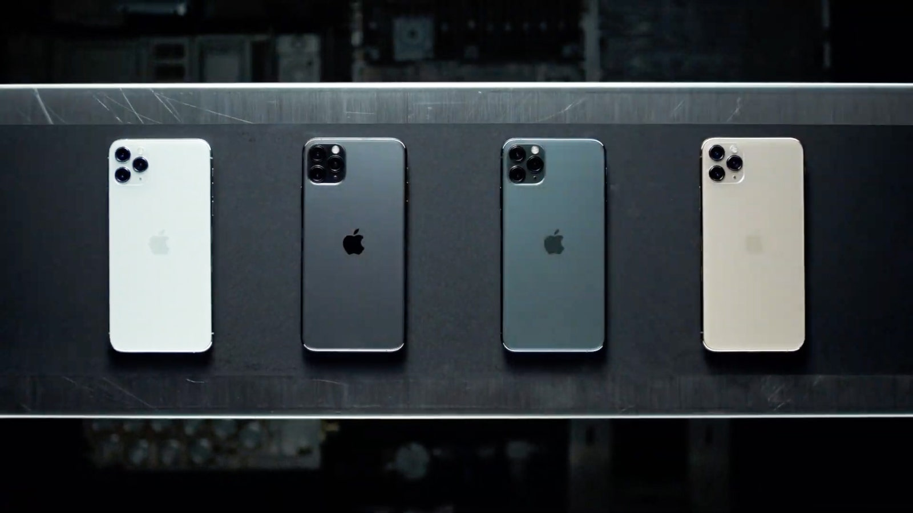

iPhone 11 Pro
«Описание товара»
iPhone 11 Pro — смартфон корпорации Apple, использующий процессор Apple A13 Bionic и операционную систему iOS 13. Был представлен 10 сентября 2019 года вместе с iPhone 11
«Характеристики товара»
| Дисплей | Процессор | ОЗУ |
|---|---|---|
| Super Retina XDR | Apple A13 Bionic, 6 ядер(Два ядра 2.66 ГГц Lightning, четыре ядра 1.82 ГГц Thunder) | 4 ГБ LPDDR4X RAM |
|  | ||
| iPhone 11 Pro и iPhone 11 Pro Max — смартфоны корпорации Apple, использующие процессор Apple A13 Bionic и операционную систему iOS 13. Были представлены 10 сентября 2019 года вместе с iPhone 11. | ||
- Производитель Foxconn и Pegatron (по контракту с Apple)
- Коммуникации GSM, CDMA2000, EV-DO, HSPA+, LTE, LTE Advanced
- Тип Смартфон
- Форм-фактор Безрамочный
- Размеры iPhone 11 Pro 144×71,4×8,1 мм
- Масса iPhone 11 Pro 188 г
- Процессор Apple A13 Bionic, 6 ядер(Два ядра 2.66 ГГц Lightning, четыре ядра 1.82 ГГц Thunder)
- ОЗУ 4 ГБ LPDDR4X RAM [1](Не подтверждено)
- Карта памяти не предусмотрена
- Связанные модели iPhone 11
- Дата выпуска 10 сентября 2019 год
- Флеш-память 64, 256 или 512 ГБ
Дополнительная информация
СИСТЕМА КАМЕР PRO. ВЕЛИКОЛЕПНАЯ ТРОЙКА
Знакомьтесь: первая в мире система трех камер, в которой новейшие технологии реализованы с традиционными для iPhone простотой и элегантностью. Максимальная область изображения теперь в четыре раза больше. Красивый снимок можно получить практически в темноте. Качество видео превосходит все ожидания, а редактировать его можно теми же инструментами, которыми вы пользуетесь для обработки фото. Теперь вы будете снимать как профессионал.
УГОЛ ОБЗОРА ЕЩЕ БОЛЬШЕ
Система камер iPhone 11 Pro поддерживает впечатляющий 4‑кратный оптический зум — от максимального приближения на телефотокамере до максимального удаления на сверхширокоугольной.
ЭЛЕГАНТНЫЙ ПРОЗРАЧНЫЙ ИНТЕРФЕЙС
В нем используются возможности сверхширокоугольной камеры — теперь вы видите, что происходит за пределами кадра, и можете моментально это снять. Между вами и объектом съемки нет практически ничего, кроме минималистичного интерфейса. И полное погружение в съемку обеспечено.
ВИДЕО 4K. ПРОФЕССИОНАЛЬНАЯ ПОДГОТОВКА КАДРОВ
iPhone 11 Pro снимает превосходные видео — плавные, реалистичные и великолепно детализированные. Мощный потенциал процессора позволяет получить видео 4K с частотой 60 кадров/с, расширенным динамическим диапазоном и кинематографической стабилизацией. А новые инструменты редактирования и возможность увеличить область изображения в четыре раза помогут в реализации ваших идей.
ПРОЦЕССОР PRO. ТАКОЙ МОЩИ САМИ НЕ ОЖИДАЛИ
Уникальный процессор A13 Bionic разработан для более тесной работы с технологиями машинного обучения. С ним iPhone способен делать такие вещи, о которых вы и не мечтали. На самом деле, по показателям скорости, мощи и технологичности этот процессор опережает другие на многие годы. Согласитесь, неплохое преимущество.
ТЕХНОЛОГИЯ FACE ID СТАЛА НА 30% БЫСТРЕЕ
Теперь она распознает лицо с более дальнего расстояния. Или если посмотреть на устройство под углом. И это по-прежнему самая надежная технология аутентификации по лицу.
Вдали от всех